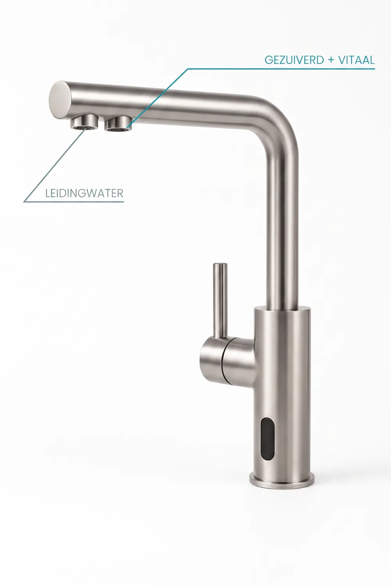

De wellness-utility voor thuis
Zuiver. Vitaal. Onbeperkt.
6-staps omgekeerde osmose met UV-sterilisatie en moleculaire H₂. Houdt PFAS, microplastics en bacteriën tot 99,9% tegen en verwijdert ~97% van de opgeloste stoffen (TDS) - daarna geremineraliseerd en verrijkt met waterstof. Vanaf €39 per maand, onderhoud en filters inbegrepen.
Vanaf €39 / mnd excl. btw · onderhoud & filters inbegrepen · specificaties volgens fabrikant

01 - De aanpak
Zes stappen.
Eén glas perfectie.
Moleculaire omgekeerde osmose verwijdert vrijwel alles wat niet in je glas thuishoort - en bouwt daarna bewust weer op wat wél bijdraagt. Klik door elke stap.
Zand, roestdeeltjes en zwevend vuil worden als eerste afgevangen, zodat de fijnere filters optimaal blijven presteren.

 Onder de gootsteen
Onder de gootsteen02 - Werking
Slimme techniek.
Strakke kraan.
Alle techniek verdwijnt in je onderkast. Boven blijft alleen een strakke designkraan die twee soorten water levert - gewoon en gezuiverd-vitaal.
Onzichtbaar onder de gootsteen
Het complete 6-staps systeem zit compact weggewerkt in je onderkast. Geen werkbladtoestellen, geen flessen - alleen je kraan.
Eén kraan, twee stromen
Een aparte uitloop levert gezuiverd én vitaal water, naast je gewone leidingwater. Kies bewust wat er in je glas komt.
Sensorbediening, touchless
Een geïntegreerde sensor activeert de stroom - hygiënisch bedienen met de rug van je hand, ook met volle handen.
Past op je bestaande kraan
De kraan past in de bestaande kraanopening (21 mm) met standaard 3/8"-aansluiting. Een erkende installateur plaatst alles in ongeveer 30 minuten.
 Micro-bubbels · moleculaire H₂
Micro-bubbels · moleculaire H₂03 - Wetenschap
Niet zomaar zuiver. Vitaal.
Zuiveren is stap één. Het verschil zit in wat we daarna toevoegen: mineralen die je lichaam herkent en moleculaire waterstof die als antioxidant werkt - meetbaar in elke druppel.
PFAS & microplastics eruit
Het RO-membraan houdt 'forever chemicals', microplastics, lood en nitraten tot 99,9% tegen; bacteriën en virussen worden nagenoeg volledig gestopt. De TDS-reductie (totaal opgeloste stoffen) bedraagt gemiddeld ~97%.
Moleculaire waterstof erin
De SPE-cel (Solid Polymer Electrolysis) genereert opgeloste H₂ - een kleine, selectieve antioxidant die neutrale watermoleculen en mineralen ongemoeid laat.
UV-sterilisatie: 100% zuiver
Een ingebouwde UV-C-lamp doodt in de laatste stap alle resterende bacteriën en virussen - zonder chemicaliën, zonder bijsmaak.
Wat je lichaam terugvraagt: schoon water, herkenbare mineralen en een antioxidante lading. VitaTap houdt PFAS, microplastics en bacteriën tot 99,9% tegen, reduceert de opgeloste stoffen met ~97% en steriliseert daarna met UV-C - vers en vitaal aan de uitloop.
Bekijk de kraanVerwijdering tot 99,9% verwijst naar specifieke verontreinigingen (PFAS, microplastics, lood, bacteriën en virussen) volgens fabrikantsmetingen van het RO-membraan. De ~97%-reductie van totaal opgeloste stoffen (TDS) is een gemiddelde fabrikantsmeting van datzelfde membraan. UV-sterilisatie elimineert bacteriën en virussen in het opslagtank-stadium. H₂-concentratie (1,2–1,6 ppm) en ORP-waarden (−400/−600 mV) zijn fabrikantspecificaties gemeten aan de uitloop. Verwijzingen naar antioxidante eigenschappen beschrijven algemene kenmerken van moleculaire waterstof - geen medische of gezondheidsclaims.
Bewezen, niet bedacht
Eerst zelf jaren gedronken.
Daarna pas aangeboden.
We zijn niet over één nacht ijs gegaan. Dit systeem staat al meer dan een jaar dagelijks bij ons eigen team en gezin in de keuken - en het bevalt elke dag opnieuw. De technologie zelf is bovendien geen experiment: onze medeoprichter bouwde meer dan tien jaar geleden al ervaring op met een vorige generatie van dit zuiveringssysteem. Wat je vandaag krijgt, is de verfijnde versie daarvan.
04 - Wellness-dashboard
Je water,
in cijfers.
De Blue Compagnion-app maakt het onzichtbare zichtbaar. Volg de kwaliteit van elk glas, kalibreer je ORP-waarden en plan onderhoud - alles vanaf je telefoon.
Bluetooth-verbinding
Koppel de Blue Compagnion-app en lees TDS, H₂-concentratie en ORP (−400/−600 mV) rechtstreeks van je kraan af.
Live waterkwaliteit
Realtime metingen tonen exact hoe zuiver en hoe waterstofrijk je water op dit moment is.
Filter-levenscyclus
Een digitale ID houdt je 12-maandelijkse filterbeurt bij en seint op tijd je installateur in.
05 - De kraan
Vier finishes.
Eén statement.
Dezelfde strakke designkraan met sensorbediening - afgewerkt in de toon van jouw keuken. Kies je finish en zie het direct.


Elke dag

In elke keuken
Gratis & vrijblijvend
Advies zonder aankoopverplichting.
14 dagen bedenktijd
Wettelijk herroepingsrecht.
Alles inbegrepen
Onderhoud & filters in je abonnement.
Maandelijks opzegbaar
Met het maandplan, geen verrassingen.
06 - Prijzen
Alles inbegrepen.
Altijd zuiver, altijd vitaal.
Onderhoud, filtervervanging en support zitten er standaard in. Kies de looptijd die bij je past - hoe langer, hoe voordeliger.
- Maandelijks opzegbaar
- VitaTap-designkraan in jouw finish
- 6-staps zuiveringssysteem onder de gootsteen
- Jaarlijks onderhoud inbegrepen
- 12-maandelijkse filtervervanging inbegrepen
- Blue Compagnion-app & support
- −31% t.o.v. maandelijks
- VitaTap-designkraan in jouw finish
- 6-staps zuiveringssysteem onder de gootsteen
- Jaarlijks onderhoud inbegrepen
- 12-maandelijkse filtervervanging inbegrepen
- Blue Compagnion-app & support
- −40% · prijsgarantie 5 jaar
- VitaTap-designkraan in jouw finish
- 6-staps zuiveringssysteem onder de gootsteen
- Jaarlijks onderhoud inbegrepen
- 12-maandelijkse filtervervanging inbegrepen
- Blue Compagnion-app & support
†5-jarenplan · €39/mnd excl. 21% btw (€47,19 incl. btw) · vaste kost ongeacht verbruik · excl. eenmalige opstartkost €605 incl. btw.
Flessenwater: gemiddelde winkelprijs mei 2026, incl. 6% btw - zonder sleuren, statiegeld of plastic.
Liever eerst advies? Plan een gratis en vrijblijvend adviesgesprek →
07 - Installatie in jouw regio
Installatie bij jou thuis
Geef je postcode in en we bevestigen de plaatsing in jouw regio. Een erkende vakman - uit ons eigen team of een gecertificeerde partner - plaatst alles volgens het 30-minuten protocol en kalibreert via de Blue Compagnion-app.
Actief in heel België · plaatsing in ongeveer 30 minuten.
Ben je zelf installateur? Word erkende VitaTap-partner →
08 - Installatie & service
In 30 minuten
geïnstalleerd.
Onze erkende installateurs volgen een strak protocol - van voorbereiding tot kalibratie - zodat je dezelfde dag nog vitaal water tapt.
De bestaande kraanopening (21 mm) en de 3/8"-aansluiting vrijmaken - geen extra boorwerk nodig.
21 mm · 3/8"Systeem in de onderkast, kraan monteren en leidingen koppelen - in zo'n 30 minuten.
± 30 minMet de Blue Compagnion-app de ORP-waarden bevestigen tussen −400 en −600 mV.
−400 / −600 mVDigitale ID aanmaken voor tracking van de verplichte 12-maandelijkse filterbeurt.
12-mnd cyclus09 - FAQ
Veelgestelde vragen
Klaar voor de overstap?
Zuiver water. Elke dag.
Vraag vandaag je gratis en vrijblijvend adviesgesprek aan. Een erkende installateur bekijkt je situatie en plaatst alles nadien in zo'n 30 minuten.
10 - Gratis advies
Eerst advies,
dan beslissen.
Laat je gegevens achter en we contacteren je binnen 2 werkdagen voor een gratis en vrijblijvend adviesgesprek - op een moment dat jou past.
- Een erkende installateur uit jouw regio bekijkt je keuken en aansluiting
- Op afspraak - bij jou thuis of telefonisch, zoals je zelf wil
- Volledig vrijblijvend. Geen aankoopverplichting, geen opdringerige opvolging